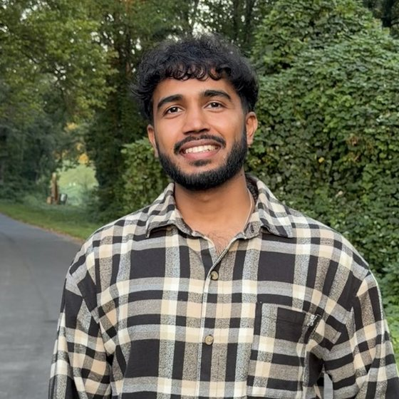

Fleets at scale
I've worked on platforms running hundreds of thousands of machines across dozens of datacenters. At that size something is always broken, so the job is making failure routine: notice it, isolate it, repair it, put it back.
Infrastructure engineer since 2018, across public, private and GPU clouds. Senior Software Engineer at Lambda, previously Tesla. Pick a layer to see where I come in.
I've worked on platforms running hundreds of thousands of machines across dozens of datacenters. At that size something is always broken, so the job is making failure routine: notice it, isolate it, repair it, put it back.
Kubernetes operators, controllers and the services around them. Most of what I build is a loop that compares what's running with what should be running and closes the gap.
I've built on AWS, Azure and GCP, helped build a private cloud from the ground up, and now work on a GPU cloud. Having done all three, I know what each is good at and what it costs to move between them.
Metrics, logs and events wired through every layer, and real-time state instead of stale snapshots. Infrastructure should notice its own problems before the people using it do.
Hypervisors at scale, GPU VMs, and the placement and quota logic that lets many teams share expensive hardware safely.
I've moved tens of thousands of existing machines onto new platforms without losing track of who owns them, and helped move workloads from public cloud onto owned hardware, saving millions of dollars a month.
“He quickly became a VM as a Service expert within Tesla Cloud project and a versatile contributor across the platform. His readiness to assist and mentor new engineers accelerated their integration and productivity, making him the first point of contact for many. His keen ability to spot and rectify design flaws has significantly influenced feature development.”
Hassan Youssef, Sr. Staff Software Engineer, Tesla
“He picked up the work very quickly and was very thorough in his approach every time we discussed on a problem, be it technical or functional. The best part I liked was his attention to minute details.”
Angshuman Das, Software Engineer, Google
“He is down to earth and always completes tasks before the deadline. He is very good in cloud computing technologies.”
Neela Shiva Prasad, Senior Software Engineer, Google

I like hard problems, and infrastructure keeps handing them to me. I started out full stack, so I care as much about the API an engineer touches as the server underneath it.
I live in San Francisco. Off the clock you'll find me on long drives with house and techno on, watching football or playing FIFA, and stopping for every dog I pass. I'm fairly sure I speak fluent dog.